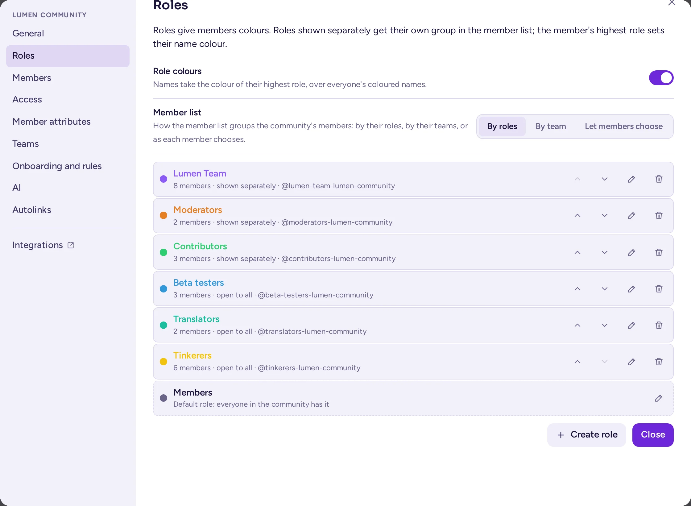
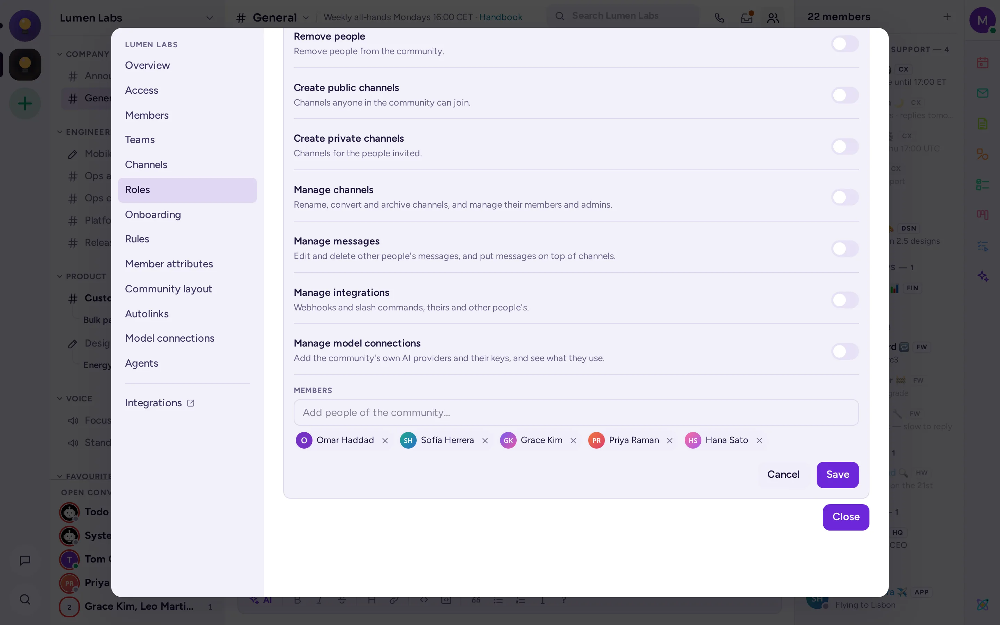
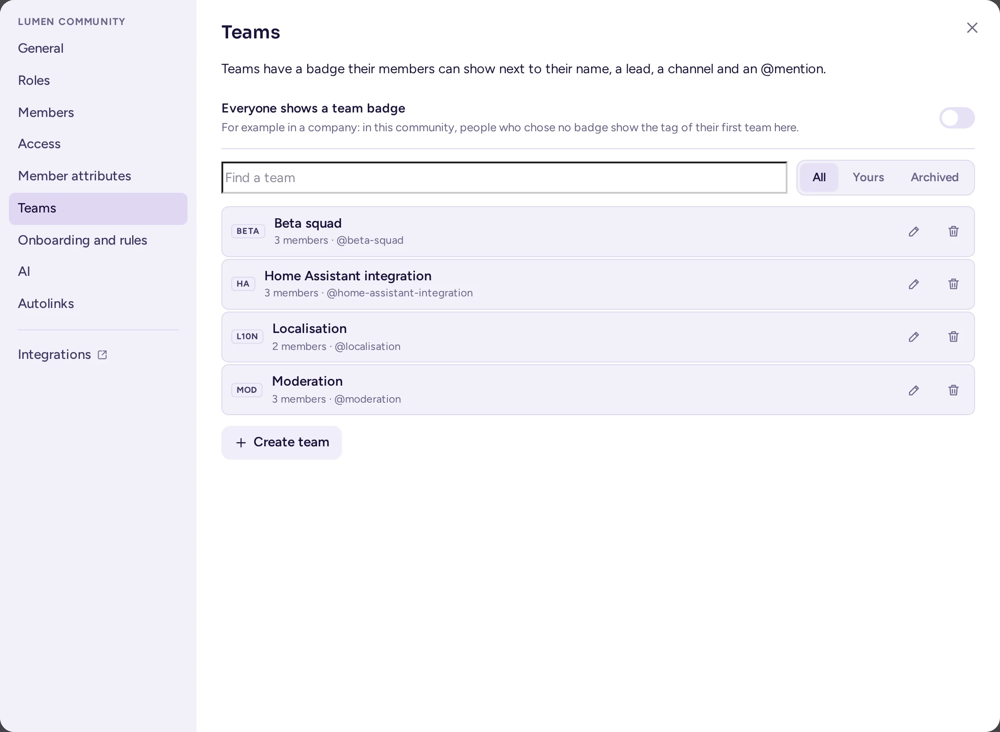

Rollen und Berechtigungen
Wie man Community-Administratoren erstellt, benutzerdefinierte Rollen mit eigenen Farben und Berechtigungen anlegt, es den Mitgliedern erlaubt, sich ihre Rollen selbst auszusuchen, und Personen in Teams zusammenfasst. Eine Tabelle am Ende fasst zusammen, wer was tun darf.
Die integrierten Rollen
Jede Community verfügt über dieselben integrierten Rollen. Ihre Berechtigungen stammen aus dem Berechtigungsschema des Servers, das nur ein Systemadministrator ändern kann.
| Rolle | Anzeige | Standardmäßige Berechtigungen |
|---|---|---|
| Systemadministrator | System Admin-Chip | Alles, in jeder Community, sowie die Systemkonsole. |
| Community-Administrator | Community Admin-Chip | Die Einstellungen, Rollen, das Onboarding, das Layout, Modellverbindungen und Agenten der Community; Moderieren und Entfernen von Mitgliedern; Löschen von Nachrichten anderer Personen und Anheften von Nachrichten; Umwandeln von Kanälen in private Kanäle; Archivieren beliebiger Kanäle der Community, einschließlich der Standardkanäle; Webhooks und Slash-Befehle. |
| Mitglied | kein Chip | Beitreten öffentlicher Kanäle, Erstellen öffentlicher und privater Kanäle, Einladen von Personen. In den Kanälen, in denen sie sich befinden: Posten, Umbenennen des Kanals und Ändern seines Headers und seiner Beschreibung sowie Verwalten seiner Mitglieder. Mitglieder archivieren keine Kanäle und heften keine Nachrichten an, es sei denn, sie sind Kanaladministratoren (siehe unten). |
| Gast | Guest-Chip und -Tag | Nur die Kanäle, in die sie hinzugefügt wurden. |
| Kanal-Administrator | Channel Admin-Chip | Verwalten eines Kanals, seiner Berechtigungen und seines Banners sowie das Anheften seiner Nachrichten. In einer Workspace-Community auch das Archivieren des Kanals. Wer einen Kanal erstellt, ist dessen erster Administrator. |
Einige Standardwerte hängen von der Art der Community ab, die Community-Administratoren unter Teameinstellungen › Allgemein wählen (siehe Art der Community):
- In einer Guild (Standard) können nur Community-Administratoren und Rollen mit der Berechtigung Kanäle verwalten Kanäle archivieren. Mitglieder können dies nicht, auch nicht bei von ihnen erstellten Kanälen.
- In einem Workspace, dem Arbeitsbereich eines Unternehmens oder einer Organisation, können auch die Administratoren eines Kanals diesen archivieren: die Person, die ihn erstellt hat, und die Personen, die sie zu Administratoren des Kanals gemacht hat.
- Bei beiden Typen heften nur die Administratoren des Kanals, die Administratoren der Community und Moderatoren mit Nachrichten verwalten Nachrichten an oder lösen die Anheftung auf.
Bei beiden Typen können Mitglieder die Kanäle, in denen sie sich befinden, weiterhin umbenennen und deren Mitglieder verwalten. Wenn Sie möchten, dass Mitglieder weniger dürfen, bitten Sie Ihren Systemadministrator, die Berechtigungen für Ihre Community in Systemkonsole › Benutzerverwaltung › Berechtigungen anzupassen, wo ein Team Override Scheme nur auf Ihre Community angewendet werden kann.
Jemanden zum Community-Administrator machen
- Öffnen Sie das Community-Menü, wählen Sie Teameinstellungen und dann die Registerkarte Mitglieder.
- Suchen Sie die Person, öffnen Sie das Menü neben ihrer Rolle und wählen Sie Zum Teamadministrator machen. (Diese Liste verwendet weiterhin den Begriff „Team“ anstelle von „Community“.)
Um die Rolle wieder zu entziehen, wählen Sie Zum Teammitglied machen. Nur Community-Administratoren und Systemadministratoren können dies tun: Keine benutzerdefinierte Rolle kann jemanden zum Community-Administrator machen.
Benutzerdefinierte Rollen
Benutzerdefinierte Rollen sind Rollen, die Sie für Ihre Community erstellen, z. B. „Moderatoren“, „Mitarbeiter“, „Beta-Tester“ oder „Mitwirkende“. Eine Rolle kann Personen eine Farbe, eine eigene Gruppe in der Mitgliederliste und Berechtigungen zuweisen. Jede Rolle kann auch erwähnt werden, was alle Personen mit dieser Rolle benachrichtigt.
Rollen werden auf der Registerkarte Rollen der Teameinstellungen verwaltet: Öffnen Sie das Community-Menü, wählen Sie Teameinstellungen und dann Rollen. Diese Registerkarte sehen nur Community-Administratoren und Personen mit der Berechtigung Rollen verwalten; Personen, die Rollen verwalten, aber nicht die Community, sehen nur die Registerkarten, die sie nutzen dürfen. Änderungen auf dieser Registerkarte werden automatisch gespeichert, sobald Sie sie vornehmen, im Rollen-Editor mit Speichern und Abbrechen; Schließen schließt die Einstellungen.
Rolle erstellen
- Wählen Sie im Tab Rollen… die Option Rolle erstellen.
- Geben Sie einen Namen ein.
- Wählen Sie eine Farbe oder geben Sie einen Farbcodes ein.
- Lassen Sie Mitglieder separat anzeigen aktiviert, wenn die Online-Mitglieder dieser Rolle in der Mitgliederliste eine eigene Gruppe erhalten sollen.
- Aktivieren Sie Alle können sie annehmen, wenn Mitglieder sich diese Rolle selbst zuweisen dürfen (siehe Rollen, die alle annehmen können).
- Aktivieren Sie die Berechtigungen, die die Rolle vergeben soll (siehe Tabelle unten).
- Fügen Sie unter Mitglieder Personen mit Personen aus dem Team hinzufügen… hinzu.
- Wählen Sie Rolle erstellen.
In der Rollenliste bestimmen Nach oben verschieben und Nach unten verschieben die Reihenfolge. Die Reihenfolge ist entscheidend: Die höchste Rolle einer Person bestimmt die Farbe ihres Namens und legt fest, wen sie verwalten kann (siehe Die Reihenfolge der Rollen). Rolle löschen entfernt die Rolle sofort, ohne Bestätigungsabfrage.
Die Standardrolle
Die letzte Zeile der Registerkarte Rollen ist die Standardrolle der Community, die beim ersten Öffnen der Registerkarte erstellt wird: Sie wird von allen in der Community gehalten, mit Ausnahme von Gästen und Bots. Ihre Berechtigungen bestimmen, was jedes Mitglied zusätzlich zu den serverseitigen Standardwerten tun darf, und ihre Farbe entspricht der von Mitgliedern ohne andere farbige Rolle. Sie können diese Rolle bearbeiten, aber nicht verschieben, löschen, zuweisen oder entziehen oder für alle öffnen; sie wird nicht unter den Rollen von Personen angezeigt.

Die Berechtigungen, die eine Rolle vergeben kann
| Schalter | Was es erlaubt |
|---|---|
| Administrator | Alles, was die Administratoren der Community tun können, was eine Rolle gewähren kann: die Community-Einstellungen, das Onboarding, die Regeln, das Layout, die Mitgliederattribute und Kategorieberechtigungen, die Bearbeitung jeder Rolle sowie alle anderen unten aufgeführten Schalter. Es umfasst auch die Banner, Beitrittsanfragen, die Auffindbarkeit und die automatische Übersetzung jedes Kanals. Personen mit dieser Rolle sind von Kanalberechtigungen nicht betroffen und können nicht gesperrt werden. |
| Rollen verwalten | Erstellen und Bearbeiten der Rollen unterhalb der eigenen sowie deren Zuweisung an Personen. Außerdem das Erstellen und Bearbeiten von Teams. |
| Personen einladen | Hinzufügen von Personen zum Team. |
| Personen entfernen | Entfernen von Personen aus dem Team und zeitliches Sperren von Personen, deren Rollen unterhalb der eigenen liegen. |
| Öffentliche Kanäle erstellen | Erstellen von Kanälen, denen jeder im Team beitreten kann. |
| Private Kanäle erstellen | Erstellen von Kanälen für die eingeladenen Personen. |
| Kanäle verwalten | Umbenennen, Konvertieren und Archivieren von Kanälen, Verwalten ihrer Mitglieder und Festlegen ihrer Berechtigungen. |
| Nachrichten verwalten | Das Bearbeiten und Löschen von Nachrichten anderer Personen sowie das Anheften von Nachrichten an der Spitze von Kanälen. |
| Integrationen verwalten | Webhooks und Slash-Befehle, eigene und die anderer Personen. |
| Modellverbindungen verwalten | Das Hinzufügen der eigenen KI-Anbieter der Community und deren Schlüssel sowie das Einsehen ihrer Nutzung (siehe Modellverbindungen). |

- Wenn Sie Administrator aktivieren, zeigt der Rollen-Editor die anderen Schalter an: Die Rolle erhält alles, was die Administratoren der Community besitzen, einschließlich Rollen verwalten, Personen entfernen und Modellverbindungen verwalten. Sie gewährt nicht die Befugnisse, die nur Systemadministratoren haben, wie z. B. das Ändern der Berechtigungsschemata. Rollen, die vor dem Upgrade auf 0.9.0 Administrator hatten, erhielten diese Berechtigungen einmalig.
- Eine Rolle kann nur Berechtigungen hinzufügen. Personen einladen und die beiden Schalter Erstellen werden standardmäßig jedem Mitglied bereits vergeben, sie sind daher nur relevant, wenn Ihr Systemadministrator sie von den Mitgliedern entfernt hat.
- Jemand, der kein Teamadministrator ist, kann einer Rolle nur die Berechtigungen zuweisen, die er selbst besitzt.
Die Rolle Moderator:in
Für eine öffentliche Community hat eine typische „Moderatoren“-Rolle Nachrichten verwalten, Personen entfernen und Kanäle verwalten und wird separat mit einer eigenen Farbe angezeigt. Die „Moderatoren“-Rolle, die die Layout-Voreinstellungen erstellen, kann Nachrichten anderer Personen bearbeiten und löschen, Nachrichten anheften, Kanäle umbenennen und deren Mitglieder verwalten sowie Personen entfernen und zeitlich aussetzen. Sie archiviert keine Kanäle: Aktivieren Sie Kanäle verwalten, wenn Ihre Moderatoren dies sollen. Voreinstellungsrollen, die vor dem Upgrade auf 0.9.0 erstellt wurden, hatten Personen entfernen nicht; das Upgrade fügte es einmalig hinzu, deren Berechtigungen nie geändert wurden.
Die Reihenfolge der Rollen
Rollen werden nach ihrer Position in der Liste gerankt, die höchste zuerst:
- Personen mit der Berechtigung Rollen verwalten können nur die Rollen unterhalb ihrer eigenen höchsten Rolle bearbeiten, verschieben und zuweisen sowie neue Rollen darunter erstellen.
- Personen mit der Berechtigung Personen entfernen können nur Personen zeitlich sperren, deren höchste Rolle unterhalb ihrer eigenen liegt.
- Rollen, die alle annehmen können, zählen nicht für den Rang.
- Community-Administrator:innen stehen über jeder Rolle. Sie können nicht zeitlich gesperrt werden.
Jemandem eine Rolle zuweisen
Dafür gibt es drei Möglichkeiten:
- Gehen Sie zum Tab Rollen, bearbeiten Sie die Rolle und fügen Sie die Person unter Mitglieder hinzu.
- In der Moderationsansicht der Person im Abschnitt Rollen Rolle hinzufügen verwenden oder das × an einer Rolle, um sie zu entfernen (siehe Die Moderationsansicht).
- Über das Onboarding, für Rollen, die alle annehmen können (siehe Onboarding).
Nur Mitglieder der Community können deren Rollen haben. Wer die Community verlässt, verliert deren Rollen und erhält sie nicht zurück, wenn er oder sie wiederkommt.
Rollen, die alle annehmen können
Eine Rolle mit der Option Alle können sie annehmen ist für alle offen: Mitglieder vergeben sie sich selbst oder entfernen sie über das Community-Menü unter Deine Rollen…. Dieser Eintrag erscheint nur, wenn die Community solche Rollen hat. Verwende sie beispielsweise für Interessen oder Benachrichtigungsgruppen wie „Ankündigungen“, „Linux-Nutzer:innen“ oder „Treffs in Paris“, die Personen erwähnen können.
Farben, Gruppen und Abzeichen
Auf dem Tab Rollen haben Community-Administratoren für die gesamte Community diese Optionen:
- Rollenfarben: Namen erhalten die Farbe der höchsten Rolle der Person. Standardmäßig aktiviert.
- Mitgliederliste: Wie die Mitgliederliste die Mitglieder der Community gruppiert: Nach Rollen, Nach Team oder Mitglieder wählen lassen (Standard).
In der Mitgliederliste erhält jede separat angezeigte Rolle eine eigene Gruppe von Online-Mitgliedern, wobei die höchste Rolle zuerst kommt. Wenn keine Rolle separat angezeigt wird, gruppiert die Liste Administratoren und Moderatoren unter Administrator und Moderatoren. Mit Mitglieder können wählen können Mitglieder die Liste zwischen Rollen und Teams umschalten; bei den anderen beiden Optionen gibt es keinen Umschalter. Ein Systemadministrator kann das Gruppieren nach Rolle für den gesamten Server deaktivieren, über Mitglieder nach Rolle gruppieren in der Systemkonsole, und diese Einstellung hat Vorrang.
Teams innerhalb einer Community
In Antimatter ist ein Team eine Gruppe von Personen innerhalb einer Community, wie zum Beispiel eine Abteilung, ein Projekt oder eine Arbeitsgruppe. Ein Team hat einen Namen, der erwähnt werden kann, ein kurzes Tag (maximal 8 Zeichen, zum Beispiel "DET"), eine Leitung, eine Beschreibung und einen Teamkanal. Mitglieder können das Tag eines ihrer Teams neben ihrem Namen anzeigen.

Ein Team erstellen
- Öffnen Sie das Community-Menü, wählen Sie Teameinstellungen und dann den Reiter Teams. Dort werden die Teams der Community aufgelistet, mit einem Suchfeld und den Filtern Alle, Deine Kategorien und Archiviert.
- Wählen Sie Team erstellen, woraufhin sich ein Editor unter der Liste öffnet: Geben Sie den Namen und die Erwähnung des Teams ein, gefolgt von Tag, Leitung, Kanal, Wofür das Team zuständig ist und seinen Mitgliedern.
- Jede Zeile eines Teams enthält rechts die Schaltflächen Bearbeiten und Archivieren (bei einem archivierten Team Wiederherstellen).
Community-Administratoren und Personen mit der Berechtigung Rollen verwalten erstellen und bearbeiten Teams. Die Leitung hat keine zusätzlichen Rechte: Der Titel ist rein informativ. Personen ohne Zugriff auf die Community-Einstellungen erhalten dieselbe Liste über Benutzergruppen… im Community-Menü; die Karte eines Teams öffnet denselben Editor in einem Dialog mit der Option Team bearbeiten.
Ebenfalls auf dem Reiter Teams: Alle zeigen ein Teamabzeichen. Diese Option zeigt Personen, die kein eigenes Abzeichen gewählt haben, den Tag ihres ersten Teams in dieser Community. Standardmäßig deaktiviert; nützlich in Unternehmen, wo das Abzeichen angibt, in welcher Abteilung jemand arbeitet. Jedes Mitglied wählt sein eigenes Abzeichen über Dein Profil in <community>… im Community-Menü (siehe Dein Profil in einer Community).

Die Mitgliederliste kann Personen nach Team gruppieren: Wählen Sie unter Mitglieder gruppieren nach oben in der Liste Teams, sofern die Community-Administratoren die Gruppierung nicht auf dem Tab Rollen festgelegt haben.
Berechtigungen in einem Kanal
Rollen gelten in jedem Kanal der Community. Um einer Rolle in einem bestimmten Kanal oder einer Kategorie mehr oder weniger Rechte zu geben, verwenden Sie Kanalberechtigungen: siehe Kanalberechtigungen. Ein privater Kanal kann auch für bestimmte Rollen reserviert werden: Seine Mitglieder folgen dann automatisch den Rollen.
Wer darf was
Mit den Standardberechtigungen des Servers:
| Aktion | Systemadministrator | Community-Administrator | Benutzerdefinierte Rolle | Mitglied | Gast |
|---|---|---|---|---|---|
| Berechtigungsschemata und die Systemkonsole ändern | Ja | Nein | Nein | Nein | Nein |
| Jemanden zum Community-Administrator machen | Ja | Ja | Nein | Nein | Nein |
| Community-Einstellungen, Onboarding, Regeln, Layout, Mitgliederattribute | Ja | Ja | Mit Administrator | Nein | Nein |
| Rollen erstellen und zuweisen | Ja | Ja | Mit Rollen verwalten, unterhalb der eigenen | Nein | Nein |
| Teams erstellen | Ja | Ja | Mit Rollen verwalten | Nein | Nein |
| Menschen einladen | Ja | Ja | Ja | Ja | Nein |
| Kanäle erstellen | Ja | Ja | Ja | Ja | Nein |
| Kanal umbenennen und seine Mitglieder verwalten | Ja | Ja | Mit Kanäle verwalten, in jedem Kanal | In den Kanälen, in denen sie sind | Nein |
| Einen Kanal archivieren | Ja | Ja, jeder Kanal | Mit Kanäle verwalten | In einem Arbeitsbereich, als Administrator des Kanals | Nein |
| Berechtigungen eines Kanals festlegen | Ja | Ja | Mit Kanäle verwalten | Als Kanaladministrator | Nein |
| Nachrichten anderer Personen löschen | Ja | Ja | Mit Nachrichten verwalten | Nein | Nein |
| Nachrichten anderer bearbeiten | Ja | Nein | Mit Nachrichten verwalten | Nein | Nein |
| Nachrichten anheften und wieder lösen | Ja | Ja | Mit Nachrichten verwalten | Als Kanaladministrator | Nein |
| Die Moderationsansicht öffnen | Ja | Ja | Mit Personen entfernen, Rollen verwalten oder Nachrichten verwalten | Nein | Nein |
| Personen zeitlich sperren | Ja | Ja, mit Ausnahme von Administratoren | Mit Personen entfernen, unterhalb ihres Rangs | Nein | Nein |
| Personen aus der Community entfernen | Ja | Ja | Mit Personen entfernen | Nein | Nein |
| Ein Konto auf dem gesamten Server deaktivieren | Ja | Nein | Nein | Nein | Nein |
| Webhooks und Slash-Befehle | Ja | Ja | Mit Integrationen verwalten | Nein | Nein |
| Die Modellverbindungen der Community | Ja | Ja | Mit Modellverbindungen verwalten | Nein | Nein |
| Die Agenten der Community | Ja | Ja | Mit Administrator | Nein | Nein |
| Rollen annehmen, die jeder annehmen kann | Ja | Ja | Ja | Ja | Ja |
Ihr Server kann abweichen, wenn ein Systemadministrator die Berechtigungsschemata geändert hat.